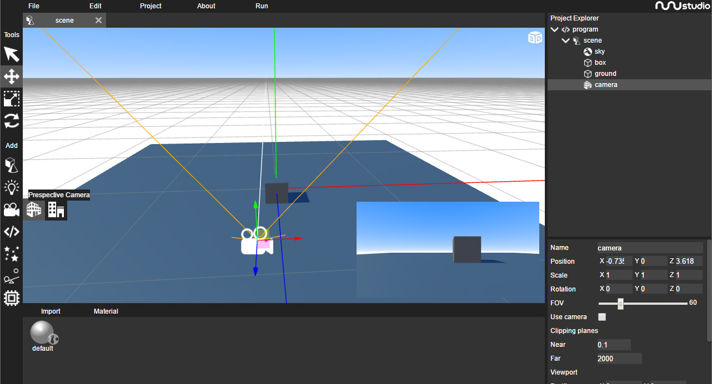

Cameras define how the scene is viewed in the screen, cameras can control where to draw content on the screen and can have post-processing effects attached.
A scene can use multiple cameras at the same time, camera have a draw order preference attached to them, used to decide wich one to render from first.
The zone on the screen where the camera draws can be controlled using the viewport attributes
Position: Normalized coordinates used to select where the draw zone starts (bottom left corner). Ranges from 0 to 1.
Size: Normalized coordinates used to define the size of the draw zone. Ranges from 0 to 1.
Cameras can be added on the 3rd icon in the object add bar.
A perspective camera is used to draw objects with a perspective projection. A perspective projetion is a 3D where depth can be easily perceived by the used.
In perspective cameras the following parameters can be configured:
FOV (Field-of-view): Angle in degrees used to control the camera field of view.
Orthographic cameras are used to draw object with a orthographic projection. A orthographic proection is a 2D projection where its impossible for the used to perceive distance, objects far away from the camera appear to have the same size as the ones closest to it.
In orthographic cameras the following parameters can be configured:
Size: Used to control how much the camera can see inside the scene
Resize mode: Defines how the camera is resized when the window size changes, if set to horizontal mode, the vertical size of the camera stays the same and the horizontal size changes on resize, if set to vertical mode, the horizontal stays locked and the vertical size changes.
In the demo bellow we can se booth a perspective camera (on the left) and a orthographic camera (on the right) in action.
To try this demo in the editor you can download the ISP project file here.
Cube cameras are composed of 6 internal perspective cameras aligned to capture an entire 360 projection of the scene.
These type of cameras can be created using a script, and can be attached to the scene (as background) or to materials (as environment map) and are used essencially to create reflection/refraction effects
This type of cameras will be discussed later.